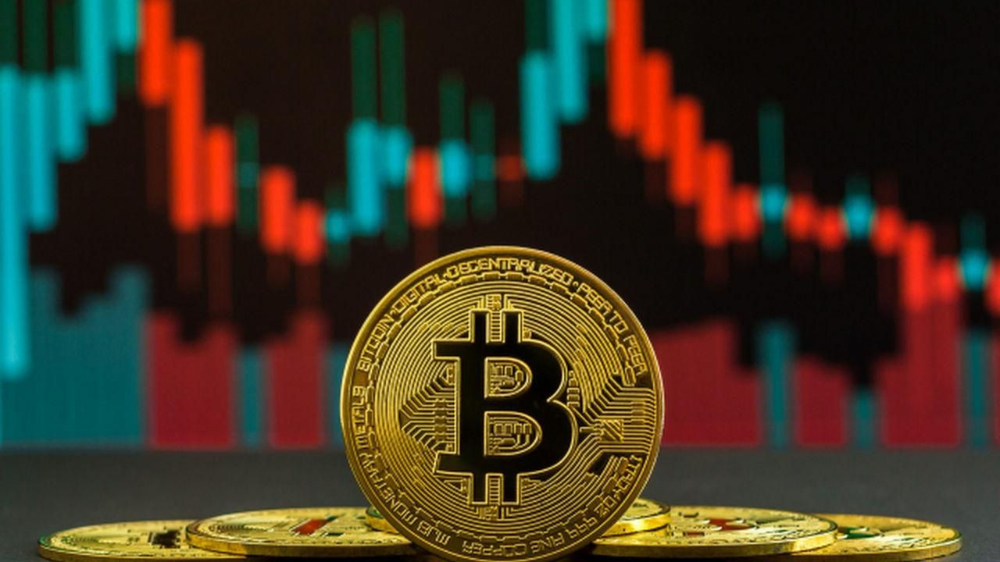

Una criptomoneda es un activo digital que emplea un cifrado criptográfico para garantizar su titularidad y asegurar la integridad de las transacciones, y controlar la creación de unidades adicionales, es decir, evitar que alguien pueda hacer copias como haríamos, por ejemplo, con una foto. Estas monedas no existen de forma física: se almacenan en una cartera digital.
Tradicionalmente, cuando quieres enviar dinero a alguien a través del sistema bancario, es necesario hacer una solicitud previa para que la otra persona reciba el dinero. Dicho de otra manera, el proceso no es directo: el banco debe verificar si tienes los fondos suficientes y luego autorizará la transacción y enviará el dinero. Después, el banco del destinatario tendrá que verificar todo por su parte. En este caso, el trámite y el movimiento de tu dinero están centralizados y los realiza un tercero de confianza, que es tu banco.
Las criptomonedas, como Bitcoin o Ethereum, están basadas en una tecnología llamada blockchain o cadena de bloques. Esta tecnología permite que las transacciones se registren de manera pública y segura en una red distribuida de computadoras (nodos). Ningún gobierno ni entidad centralizada tiene control sobre estas redes, ya que la validación de las transacciones y la creación de nuevas monedas (minado o staking) es realizada por muchos participantes en la red, no por una autoridad central.
La regulación de las criptomonedas acaparó la atención de gobiernos y autoridades de todo el mundo durante 2023. Mientras algunos países continúan sin crear marcos normativos claros para las criptomonedas, cada vez más jurisdicciones apuestan por diseñar estándares y leyes que garanticen requisitos y reglas para los proveedores de servicios, empresas y plataformas relacionadas con el mundo de las criptomonedas.
Un NFT (por sus siglas en inglés, Non-Fungible Token, o "token no fungible" en español) es un tipo de activo digital único que se utiliza principalmente para representar la propiedad o autenticidad de un objeto digital en la blockchain. A diferencia de las criptomonedas como Bitcoin o Ethereum, que son fungibles (es decir, cada unidad de la criptomoneda es intercambiable por otra unidad del mismo valor)
Los NFTs se crean o "emiten" a través de un proceso llamado minting. Para crear un NFT, el creador sube un archivo digital (como una imagen, video, o música) a una plataforma que permita la creación de NFTs y paga una tarifa de transacción (también conocida como "gas fee") para registrar el NFT en la blockchain.
Una vez creado, el NFT puede ser puesto a la venta en mercados digitales de NFTs, como OpenSea, Rarible, Foundation, o SuperRare. Los compradores pueden adquirir el NFT usando criptomonedas (generalmente Ethereum), y el NFT se transfiere a su wallet digital, donde queda registrado como propiedad.El NFT incluye un identificador único y metadatos que certifican su autenticidad y su historial de propiedad. Aunque el archivo digital puede ser copiado por otros, el NFT registrado en la blockchain solo puede ser propiedad de una persona a la vez.
Compra NFT'S
